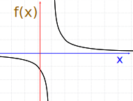
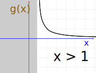
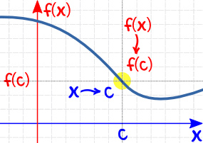
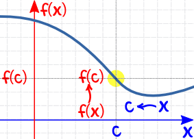
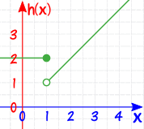
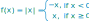

Continuous Functions
A function is continuous when its graph is a single unbroken curve ...
... that you could draw without lifting your pen from the paper.
That is not a formal definition, but it helps you understand the idea.
Here is a continuous function:

Examples
So what is not continuous (also called discontinuous) ?
Look out for holes, jumps or vertical asymptotes (where the function heads up/down towards infinity).

Not Continuous
(hole)
Not Continuous
(jump)
Not Continuous
(vertical asymptote)
Try these different functions so you get the idea:
(Use slider to zoom, drag graph to reposition, click graph to re-center.)
Domain

A function has a Domain.
In its simplest form the domain is all the values that go into a function.
We may be able to choose a domain that makes the function continuous
Example: 1/(x−1)
At x=1 we have:
So there is a "discontinuity" at x=1

f(x) = 1/(x−1)
So f(x) = 1/(x−1) over all Real Numbers is NOT continuous
Let's change the domain to x>1

g(x) = 1/(x−1) for x>1
So g(x) IS continuous
In other words g(x) does not include the value x=1, so it is continuous.
When a function is continuous within its Domain, it is a continuous function.
More Formally !
We can define continuous using Limits (it helps to read that page first):
A function f is continuous when, for every value c in its Domain:
f(c) is defined,
and
limx→cf(x) = f(c)
"the limit of f(x) as x approaches c equals f(c)"
The limit says:
"as x gets closer and closer to c
then f(x) gets closer and closer to f(c)"
And we have to check from both directions:
| as x approaches c (from left) then f(x) approaches f(c) |
 | |
| AND as x approaches c (from right) then f(x) approaches f(c) |
 |
If we get different values from left and right (a "jump"), then the limit does not exist!
And remember this has to be true for every value c in the domain.
How to Use:
Make sure that, for all x values:
- f(x) is defined
- and the limit at x equals f(x)
Here are some examples:
Example: f(x) = (x2−1)/(x−1) for all Real Numbers

The function is undefined when x=1:
(x2−1)/(x−1) = (12−1)/(1−1) = 0/0
So it is not a continuous function
Let us change the domain:
Example: g(x) = (x2−1)/(x−1) over the interval x<1
Almost the same function, but now it is over an interval that does not include x=1.
So now it is a continuous function (does not include the "hole")
Example: How about this piecewise function:
It looks like this:

It is defined at x=1, because h(1)=2 (no "hole")
But at x=1 you can't say what the limit is, because there are two competing answers:
- "2" from the left, and
- "1" from the right
so in fact the limit does not exist at x=1 (there is a "jump")
And so the function is not continuous.
But:
Example: How about the piecewise function absolute value:


At x=0 it has a very pointy change!
But it is still defined at x=0, because f(0)=0 (so no "hole"),
And the limit as you approach x=0 (from either side) is also 0 (so no "jump"),
So it is in fact continuous.
(But it is not differentiable at x=0)